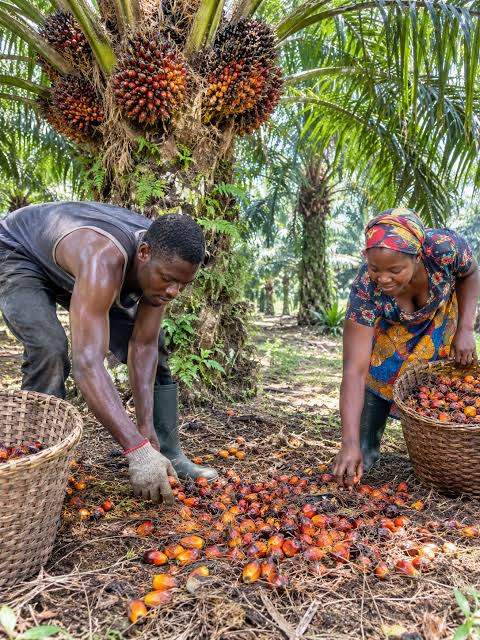

A view from the farm
Land, harvest
and the hands behind it.
Take a closer look at the oil palm landscapes and everyday farm work at BAEDO INTEGRATED FARM.
BAEDO INTEGRATED FARM · FIELD NOTES IN PICTURES
Scenes from our work
A closer look
at the plantation.
From wide plantation views to the fruit gathered at harvest, these images capture some of the places and activities connected to our oil palm farm.
01
 02
02
 03
03
 04
04

05 06
06
+
More scenes
PALM OIL PROCESSING
More scenes
to come.
Processing photos will be added when BAEDO-specific images are available.
There’s more to see
Get to know the
land behind the images.
Explore how BAEDO INTEGRATED FARM approaches its plantation and the work happening across the farm.
Explore the plantation ↗